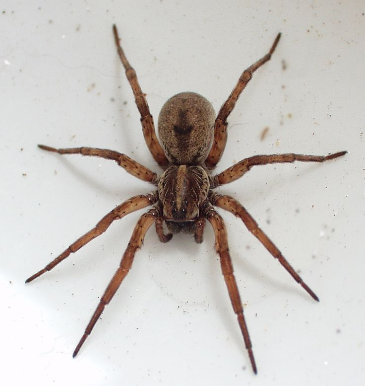

RIDDLE OO1.Balong malalim, puno ng patalim (A deep well full of knives) Answer: Bibig (Mouth) |
 | RIDDLE OO2.Maliit pa si nene, marunong nang manahi (Nene is still a child but she already knows how to weave) Answer: Gagamba (Spider) |
|
|---|---|---|---|
RIDDLE OO3.Hindi hari, hindi pari ngunit suot niya’y sari-sari (Not a king nor a priest but wears assorted wardrobe) Answer: Sampayan (Clothesline) |
RIDDLE OO4.Itinapon mo na, bumabalik pa (Even if you throw it away, it still comes back) Answer: Yoyo |
DALIT (HIMNO) of Mabini town (Batangas, Philippiness) to its Patron, St. Francis of Paola. PATRON NAMIN, SAN FRANCISCO, KAMI’Y TURUAM MO PAGKILALAG, PAGMAMAHAL, PAGLILINGKOD SA DIYOS. Mahal na Patrron, sinilang ka muting bayan ng Paola. Mga dukhang magulang mo gumabay sa iyo. Isang kuwebang tiniman mo Banal na ermitanyo nag-franciscano ka at binuo sangay ng Minimo. Kaya lalo kang dinayo lapit sama mga katoto sa pagsaksi mo kay Kristo sa simpleng buhay mo. Naalaman ni Papa Sixto tungkol lahat sa iyo inatasan kang mangaral sa bansa at bayan. Api’t dukha kinalinga lahat pinagpala maharlika’t mayayaman iyong tinuruan. Kababang loob naman tuntunin sa buhay susi ng kabanalan sarili’t tahanan. Ang buhay ngayon naming batbat tigib kagipitan loob nami’y palakasin tiwala at dasal Amang Francisco, ituro po ninyo ano ang tunay na ligaya ang Mabini’y sumasamo sa Diyos umaasa.
Noong unang panahon may nakatirang mag-ina sa isang malayong pook. Ang ina ay si Aling Rosa at ang anak ay si Pinang. Mahal na mahal ni Aling Rosa ang kanyang bugtong na anak. Kaya lumaki si Pinang sa layaw. Gusto ng ina na matuto si Pinang ng mga gawaing bahay, ngunit laging ikinakatwiran ni Pinang na alam na niyang gawin ang mga itinuturo ng ina. Kaya’t iang araw nagkasakit si Aling Rosa. Hindi siya makabangon at makagawa ng gawaing bahay. Inutusan niya si Pinang na magluto ng lugaw. Isinalang ni Pinang ang lugaw ngunit napabayaan dahil sa kalalaro. Ang lugaw ay dumikit sa palayok at nasunog. Nagpasensiya na lang si Aling Rosa, napagsilbihan naman siya kahit paano ng anak. Nagtagal ang sakit ni Aling Rosa kaya’t napilitang si Pinang ang gumagawa sa bahay. Isang araw, sa kanyang pagluluto hindi niya makita ang posporo. Tinanong ang kanyang ina kung nasaan ito. Isang beses naman ay ang sandok ang hinahanap. Ganoon ng ganoon ang nangyayari. Walang bagay na di makita at agad tinatanong ang kanyang ina. Nayamot si Aling Rosa sa katatanong ng anak kaya´t nawika nito: ” Naku! Pinang, sana’y magkaroon ka ng maraming mata upang makita mo ang lahat ng bagay at hindi ka na tanong nang tanong sa akin. Dahil alam niyang galit na ang kanyang ina ay di na umimik si Pinang. Umalis siya upang hanapin ang sandok na hinahanap. Kinagabihan, wala si Pinang sa bahay. Nabahala si Aling Rosa. Tinatawag niya ang anak ngunit walang sumasagot. Napilitan siyang bumangon at naghanda ng pagkain. Pagkaraan ng ilang araw ay magaling-galing na si Aling Rosa. Hinanap niya si Pinang. Tinanong niya ang mga kapitbahay kung nakita nila ang kanyang anak. Ngunit naglahong parang bula si Pinang. Hindi na nakita ni Aling Rosa si Pinang. Isang araw, may nakitang halaman si Aling Rosa sa kanyang bakuran. Hindi niya alam kung anong uri ang halamang iyon. Inalagaan niyang mabuti hanggang sa ito’y magbunga. Laking pagkamangha ni Aling Rosa ng makita ang anyo ng bunga nito. Ito’y hugis-ulo ng tao at napapalibutan ng mata. Biglang naalaala ni Aling Rosa ang huli niyang sinabi kay Pina, na sana’y magkaroon ito ng maraming mata para makita ang kanyang hinahanap. Tahimik na nanangis si Aling Rosa at laking pagsisisi dahil tumalab ang kanyang sinabi sa anak. Inalagaan niyang mabuti ang halaman at tinawag itong Pinang, Sa palipat-lipat sa bibig ng mga tao ang pinang ay naging pinya.
by: Manuel Arguilla Leon and his wife Maria are about to return to Leon's village after getting married. They had met in the city and Maria has never lived in a village. They are greeted by Baldo, Leon's younger sibling, as their horse carriage stops outside the village. Baldo welcomes the new member of the family. He is impressed by her beauty and soft feature. He observes her nice fragrance and radiant smile. He ties their bull, named Labang, to the cart and Leon hauls their trunk on it. Baldo encourages Maria to touch Labang’s hair and horns. She is awestruck at Labang's strength and horns. Leon helps her on the cart and she sits on a bale of husk. They start their journey and Leon has the reins. After going a little further, Baldo takes the reins and takes a sudden route change into the rocky road of Waig and surrounding fields. Leon enquiries about the change of route and Baldo assure him that he is only following their father's orders. Baldo and Leon both question Maria about her views about their village, fields and rocky roads. She is enthralled by the natural beauty and simple lifestyle. She condemns the sheer number of vehicles and noise in the city. She loves the starry and clear skies over the lush fields. She and Leon even start to sing a song that Leon was taught by his father about the sowed fields under clear skies. They meet a couple of people after coming out of the fields but not many as most people avoid using the fields after dark. They finally reach their house and are welcomed by Leon s mother and sister. They are smiling and excited. Leon enquiries about his father who is in his room struggling with leg pain (injured in the revolution). Baldo goes to tie Labang and when he returns he finds Maria talking and crying with his mother and sister. His hears his father s call and goes to meet him. His father questions about Maria's conduct and her behaviour throughout their journey to the house. It was test designed to see if she can adjust and accept the life of the village and make it her home. Baldo reassures him about her live for Leon and commitment to their marriage. He confirms his observation that Maria was ready to embrace their house as her home. Their conversation is disturbed as the new couple enters to meet with the father. Baldo leaves the room giving them some space with the head of the family.
Long, long ago only gods lived in this world. The earth, the sea, and the sky were ruled by three different powerful gods. The sun god who ruled the sky had a very beautiful daughter, Luna, the moon. Luna enjoyed going around the heavens in her golden chariot. One day she found herself taking another path which led her outside her kingdom. She wandered on until she reached the place where the sky met the sea. Beautiful and unusual sights greeted her eyes. As she was admiring the beautiful things around, a voice startled her. It asked, Where has thou come from, most beautiful one?” Turning around she saw a young man who looked much like her father though fairer. She wanted to run away but when she looked at him again, she saw that he was smiling at her. Taking courage she answered, I am Luna, daughter of the sun god.” The young man smiled at her and answered, “I am Mar, the son of the sea god. Welcome to our kingdom.” Soon the two became good friends. They had many interesting stories to tell each other. When it was time for Luna to go, they promised to see each other as often as they could for they had many more tales to tell. They continued meeting at the same spot until they realized that they were in love with each other. One day after one of their secret meetings, Luna went back to the heavens full of joy. She was so happy that she told her secret to one of ha cousins. The cousin, jealous of her beauty and her happiness, reported the affair to the sun god. The sun god was angered at his daughter’s disobedience to the Immortal Laws. He shut her in their garden and did not allow her to get out. Then he sent a messenger to the sea god informing him that his son Mar has disobeyed the Immortal Laws. The sea god, when was also angered by his son’s disobedience, imprisoned him in one of his sea caves. Luna stayed in the garden for sometime. She was very sad at not being able to see Mar. She longed to be with him again. Feeling very restless one day, she escaped from the garden She took her golden chariot and rushed to their meeting place. Mar, who was imprisoned in the sea cave, saw her reflection on the water. He wanted to get out to meet her. He tried hard to get out of the cave, but he could not. He struggled so hard that he shook the walls of his cave causing unrest in the sea. Luna waited for Mar to appear, but he did not come. Then she went back home very sad. Each time she remembered Mar she would rush out in her golden chariot to the meeting place in the hope of seeing him again. The fishermen out in the sea believe that each time Luna, the moon, appears, the sea gets troubled. “It is Mar trying to escape from his cave,” they say.